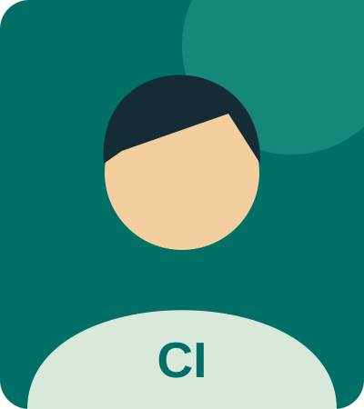

Accessible Personal Portfolio
A responsive single-page website with semantic sections, keyboard-accessible navigation, and an interactive recommendation form.
HTML · CSS · JavaScript
MY LEARNING PORTFOLIO
I am developing my skills in web development, Linux administration, and cloud security. This portfolio brings together learning projects built with HTML, CSS, and JavaScript. I enjoy making clear, useful interfaces and understanding how the systems behind them work.
Explore the projects ↗THE TOOLKIT
Semantic page structure
Responsive visual design
Interactive browser features
Command-line fundamentals
Version control fundamentals
LEARNING BY MAKING
Practice project concepts that guide my learning, rather than client work.
A responsive single-page website with semantic sections, keyboard-accessible navigation, and an interactive recommendation form.
HTML · CSS · JavaScriptA learning project concept for organizing command examples covering permissions, systemd services, networking, and system logs.
Linux · DocumentationA project concept for explaining IAM, firewall configuration, and recovery procedures using notes from temporary training environments.
Cloud · SecurityFEEDBACK & REFLECTION
The three initial cards are sample feedback for this coursework demonstration, not real testimonials.
“Cristian's practice portfolio presents technical topics in a clear, approachable way.”
Sample recommendation · Interface clarity
“The attention to semantic structure and responsive layouts makes this learning project easy to explore.”
Sample recommendation · Web foundations
“A thoughtful learning mindset connects web development, Linux fundamentals, and cloud security.”
Sample recommendation · Continuous learning